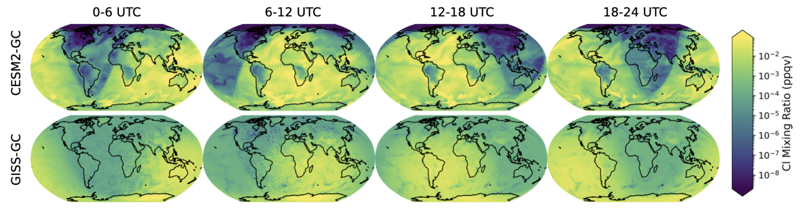

Working Group 2: Modeling
WG2 develops and runs the chemistry-climate model simulations that provide the mechanistic foundation for FETCH4. The group implements a common chemical mechanism across four state-of-the-art models, runs simulations spanning glacial through modern time periods, and produces the high-resolution model output that WG3 uses to train and evaluate its machine learning emulators. Comprehensive climate models with interactive chemistry are critical for evaluating methane's sources and sinks, but most models are too computationally intensive to run frequently, and few include the isotopic tracers or halogen chemistry needed to interpret modern observations. WG2 addresses both of these limitations directly.
A central design choice in FETCH4 is to implement the same chemical mechanism across four independent chemistry-climate models: NASA GISS ModelE2.1, NCAR CESM2, UKESM2, and NOAA GFDL ESM4. Running identical chemistry in multiple models allows the team to separate robust signals from model-specific behavior, quantify structural uncertainty in methane and OH simulations, and generate diverse training data for the WG3 emulator hierarchy. Each model brings different representations of atmospheric dynamics, ocean coupling, and land surface processes, making the multi-model ensemble more informative than any single model could be. This approach also positions FETCH4 to contribute to future model intercomparison efforts with a level of chemical detail that has rarely been available in previous assessments.
The FETCH4 chemical mechanism includes online methane isotopologues (13CH4, CH3D, 14CH4), 14CO, and comprehensive tropospheric halogen chemistry, including reactive chlorine, bromine, and iodine species that play an outsized role in methane isotopic fractionation relative to their contribution to bulk methane loss. This mechanism has been fully implemented in NASA GISS ModelE2.1 and NCAR CESM2, with implementation ongoing in UKESM2. Having the same mechanism running across multiple models enables direct structural comparisons of methane and OH variability that previous multi-model studies could not perform, due to differences in underlying chemical schemes.

With the chemical mechanism in place, WG2 is preparing a coordinated set of time-slice simulations spanning the Last Glacial Maximum, the preindustrial era, and the modern period. These simulations archive high-frequency three-dimensional chemical and physical fields that serve two purposes: they provide training data for the WG3 machine learning emulators, and they allow the team to investigate outstanding scientific questions about methane variability across past climate states. A 14CO inversion framework has also been developed within GEOS-Chem to interpret the new global 14CO observations from WG1 and constrain variability in tropospheric OH. In parallel, ONNX4ESM provides a portable Fortran-based framework for deploying the machine learning parameterizations developed by WG3 directly within these Earth system models, closing the loop between the two groups.